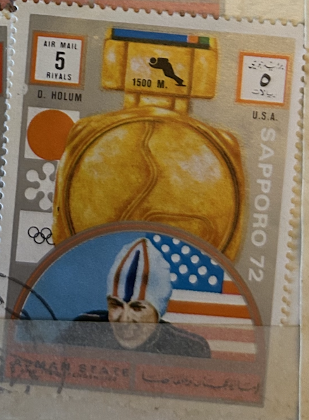
| SOURCE | TITLE| IMAGE MATCH | click to source page |
| eBay | STAMPS ARAB AJMAN SPORTS OLYMPIC GAMES 1972 SAPPORO Actual Stamp In Photo TKS1 | eBay |  |
| Alamy | Sports postage stamps hi-res stock photography and images - Alamy | 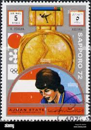 |
| Dreamstime.com | Adrianus „Ard“ Schenk 1944, Netherlands, Gold Medalists of the Olympic Games, Sapporo Serie, Circa 1972 Editorial Image - Image of games, post: 223499580 | 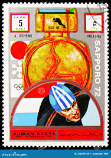 |
| PICRYL | The Soviet Union 1939 CPA 719 stamp (Nikolai Chernyshevski 60k), Soviet Union - PICRYL - Public Domain Media Search Engine Public Domain Search | 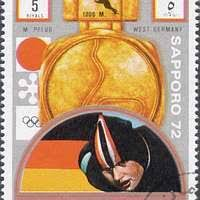 |
| Alamy | Monika pflug hi-res stock photography and images - Alamy | 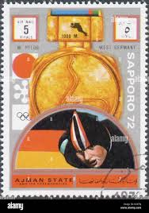 |
| ebid.net | Australia 1988 Living Together 50c Used Stamp on eBid United Kingdom | 190561558 | 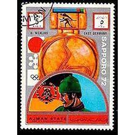 |
| eBay | DDR 1773-1777,1778-1780 used 1972 Sports, Rosen | eBay | 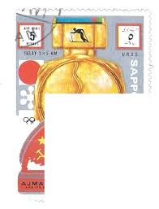 |
| eBay | Holland Sports Postal Stamps for sale | eBay | 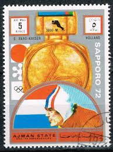 |
| eBay | Mozambican Colony Topical Postal Stamps for sale | eBay | 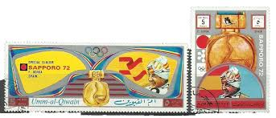 |
| Wikipedia | Paul Hildgartner - Wikipedia | 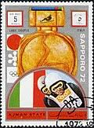 |
| eBay | Emirati Postage Olympics Postal Stamps for sale | eBay | 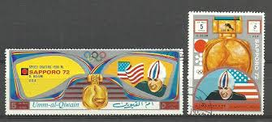 |
| eBay | Почтовые марки Эмирати Олимпийские игры - огромный выбор по лучшим ценам | eBay | 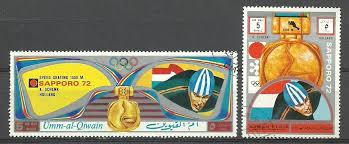 |
| Alamy | Stamp ajman hi-res stock photography and images - Page 8 - Alamy | 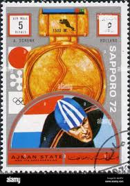 |
| eBay | Emirati Used Olympics Postal Stamps for sale | eBay | 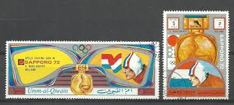 |
| Pantheon.World | Greatest Japanese Skiers | Pantheon |  |
| eBay | US UX80 Olympics 10c Postal Card FDC Sep 17, 1979 Eugene OR - Fleetwood UX80-1 | eBay | 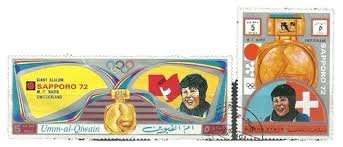 |
| Wikimedia.org | File:1972 stamp of Ajman Ochoa.jpg - Wikimedia Commons | 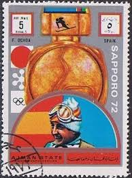 |
| GetArchive | 4 Galina Kulakova On Stamps Image: PICRYL - Public Domain Media Search Engine Public Domain Search} | 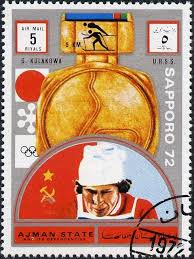 |
| Skate Guard Blog | Skate Guard Blog: The Boy From Bratislava: The Ondrej Nepela Story | 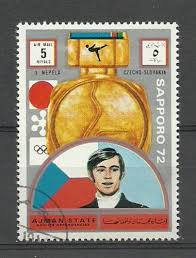 |
| Wikimedia.org | File:1972 stamp of Umm al-Quwain Ulrich Wehling.jpg - Wikimedia Commons | 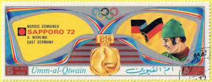 |
| Shutterstock | Arabic Stamps Postcards: Over 2,049 Royalty-Free Licensable Stock Photos | Shutterstock | 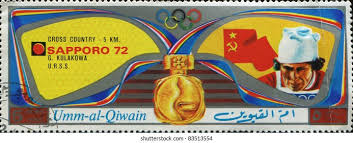 |
| Dreamstime.com | Post Stamp Printed in Ajman State for the Winter Olympics in Sapporo, Japan Editorial Stock Image - Image of postal, post: 181758499 | 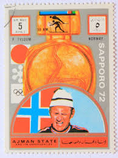 |
| Alamy | Barbara cochran hi-res stock photography and images - Alamy | 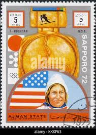 |
| eBay | Ajman Sport Sapporo Winter Olympics Chempion Luge Couple Italy stamp 1972 A-4 | eBay | 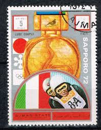 |
| Alamy | This 1972 stamp from Umm al-Quwain, part of the United Arab Emirates, was designed by Zimmerer and Utzschneider. It represents the country's early efforts to establish a postal identity post-independence Stock Photo - | 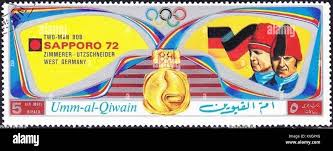 |
| GetArchive | 1972 stamp of Umm al-Quwain Schenk 2 - PICRYL - Public Domain Media Search Engine Public Domain Image | 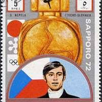 |
| Alamy | Olympic stamp hi-res stock photography and images - Alamy | 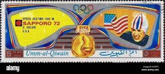 |
| Alamy | Stamp printed by Umm al-Quwain, shows hockey player bats the puck Stock Photo - Alamy | 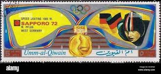 |
| Alamy | Galina Kulakova, a Soviet cross-country skier, competed in the 1968 Winter Olympics held in Grenoble, France. She achieved success in the event, contributing to the Soviet Union's strong performance in Olympic skiing | 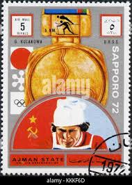 |
| Avion Thematics | Avion Thematics Stamps | Search for stamps on Olympic+1972 | 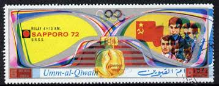 |
| Alamy | Quwain hi-res stock photography and images - Page 8 - Alamy | 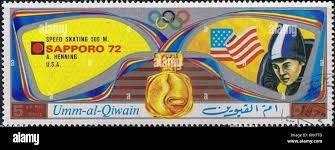 |
| Wikimedia.org | File:1972 stamp of Umm al-Quwain Stien Kaiser.jpg - Wikimedia Commons | 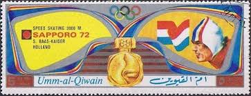 |
| Alamy | Wehling hi-res stock photography and images - Alamy | 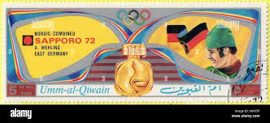 |
| Catawiki | Umm al Kaiwan 1972 - Umm al Kaiwan Collection ** only complete issues with rare editions - auction online Catawiki | 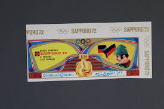 |
| eBay | UAE stamps x16 - see pictures and description | eBay | 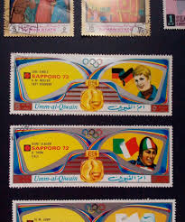 |
| Alamy | Postage stamp soviet union hi-res stock photography and images - Alamy | 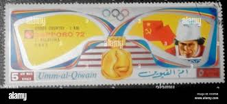 |
| eBay | Ajman Sport Sapporo Winter Olympics Chempion Lundback Sweden stamp 1972 A-4 | eBay | 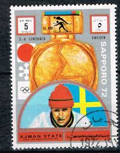 |
| Alamy | Stamp stock book hi-res stock photography and images - Page 6 - Alamy | 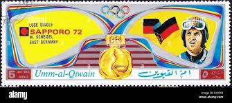 |
| Alamy | United arab emirates postage stamp hi-res stock photography and images - Alamy | 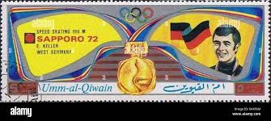 |
| Wikimedia.org | File:1972 stamp of Umm al-Quwain Wojciech Fortuna.jpg - Wikimedia Commons | 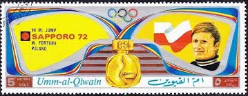 |
| Wikimedia.org | File:1972 stamp of Umm al-Quwain Galina Kulakova.jpg - Wikimedia Commons | 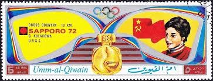 |
| Alamy | Olympic gold design hi-res stock photography and images - Page 3 - Alamy | 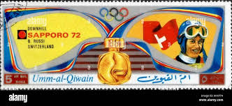 |
| Alamy | Umm said hi-res stock photography and images - Page 6 - Alamy | 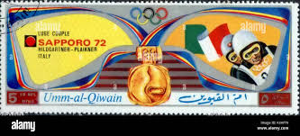 |
| Wikimedia.org | File:1972 stamp of Umm al-Quwain Marie-Theres Nadig.jpg - Wikimedia Commons | 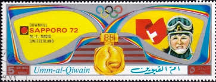 |
| alamy.de | Eine Briefmarke von 1972 aus Umm al-Quwain mit Kunstwerken von Erhard Keller. Der Stempel hebt das kulturelle Erbe der Vereinigten Arabischen Emirate hervor Stockfotografie - Alamy | 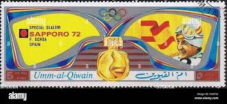 |
| Wikimedia.org | File:1972 stamp of Umm al-Quwain Ondrej Nepela.jpg - Wikimedia Commons | 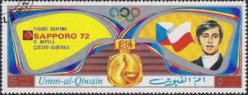 |
| Alamy | Postage stamp from Umm al-Qaiwain in the United Arab Emirates in the Masks (I) series issued in 1972 Stock Photo - Alamy | 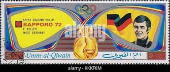 |
| Dreamstime.com | Galina Kulakova editorial stock image. Image of antique - 98514194 | 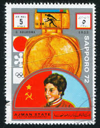 |
| Mystic Stamp Company | C112 - 1983 35c 23rd Summer Olympics '84, Pole Vaulting - Mystic Stamp Company | 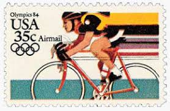 |
| Alamy | Uae exchange hi-res stock photography and images - Alamy | 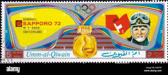 |
| lastdodo.com | Olympic Winter Games 5 (1972) - Ajman - LastDodo | 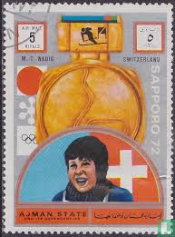 |
| Alamy | Umm icon hi-res stock photography and images - Alamy | |
| Mystic Stamp Company | 1639-44 - 1977 Korea, Dem. People's Republic - Mystic Stamp Company | |
| Poppe Stamps | Poppe Stamps: Yemen Republic 1, 1971, 9999, Boats And Ships, Olympic Games - stamps for sale by theme and country | |
| Shutterstock | 9+ Hundred Olympics Stamp Usa Royalty-Free Images, Stock Photos & Pictures | Shutterstock | |
| Federal University of Agriculture, Abeokuta (FUNAAB) | RAS AL KHAIMA SPACE STAMPS 1972 OLYMPIC | |
| Phil India Stamps | Olympic & Asian Games| Postal Stationary| Phil India Stamps | |
| Shutterstock | Sport Stamps: Over 33,123 Royalty-Free Licensable Stock Photos | Shutterstock | |
| Colnect | Stamp: 1972 Munich Athletics (Oman, Dhufar: Cinderella Stamps(Summer Olympic Games 1972 - Munich) Col:DH 1972-02/5 📮 |
{kind=link}
{kind=link}
{kind=link}
{kind=link}
{kind=link}
{kind=link}
{kind=link}